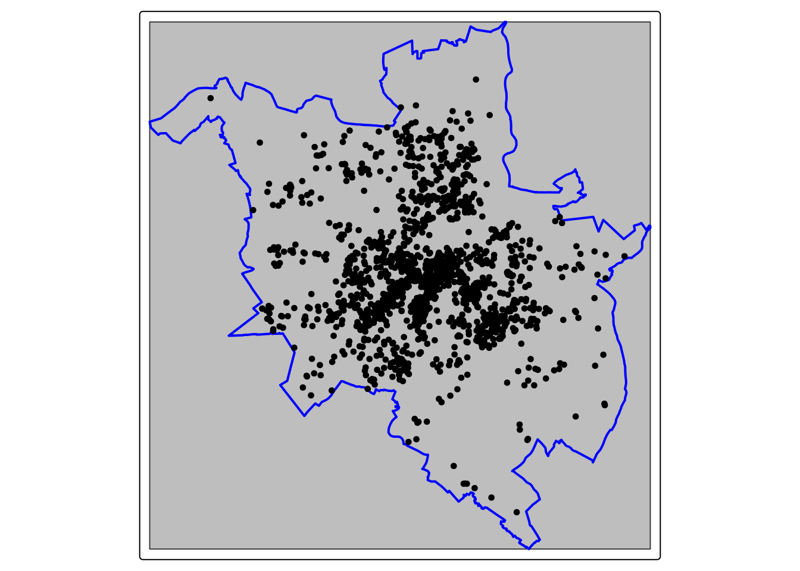
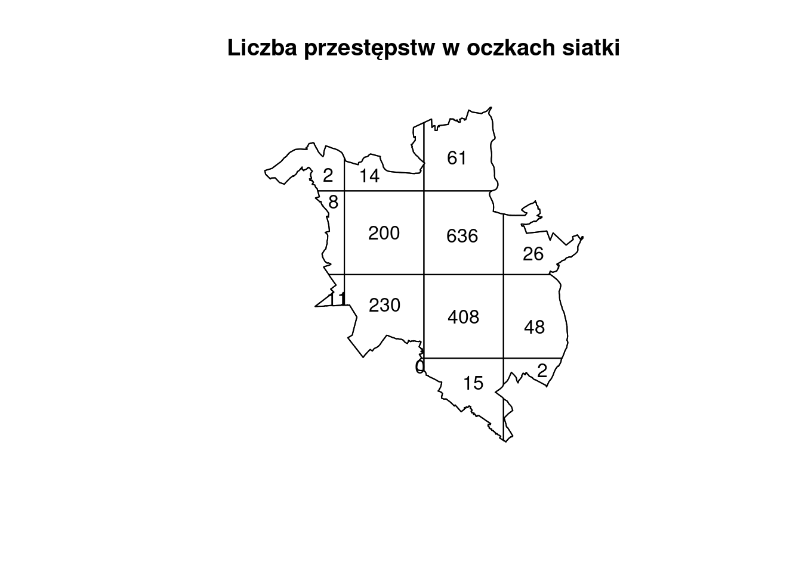
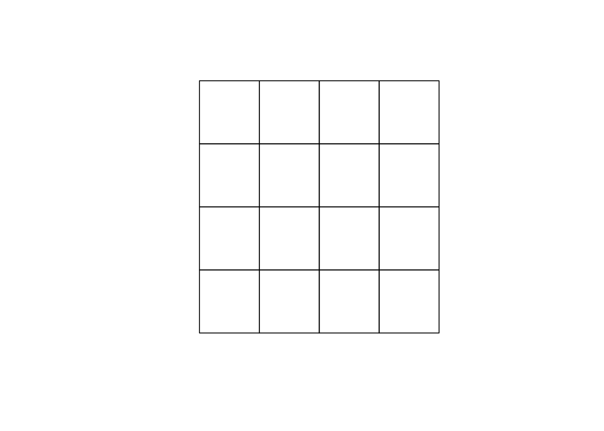
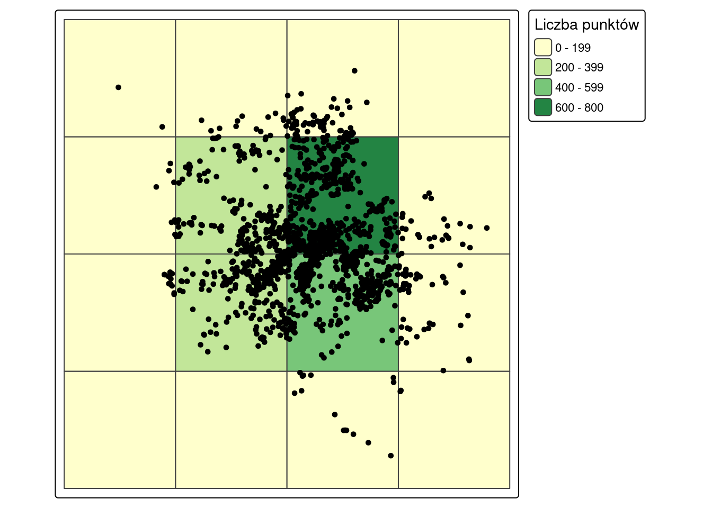
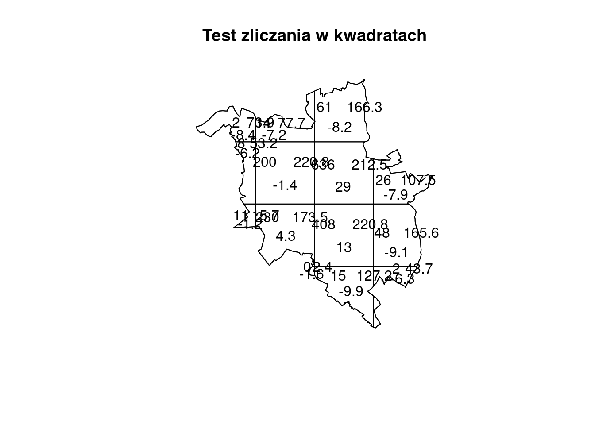
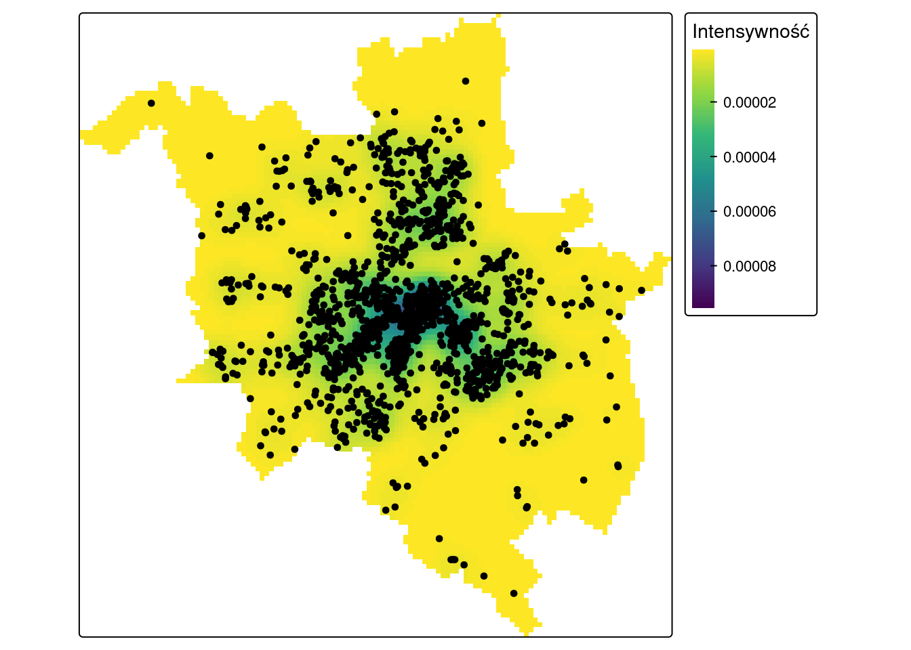
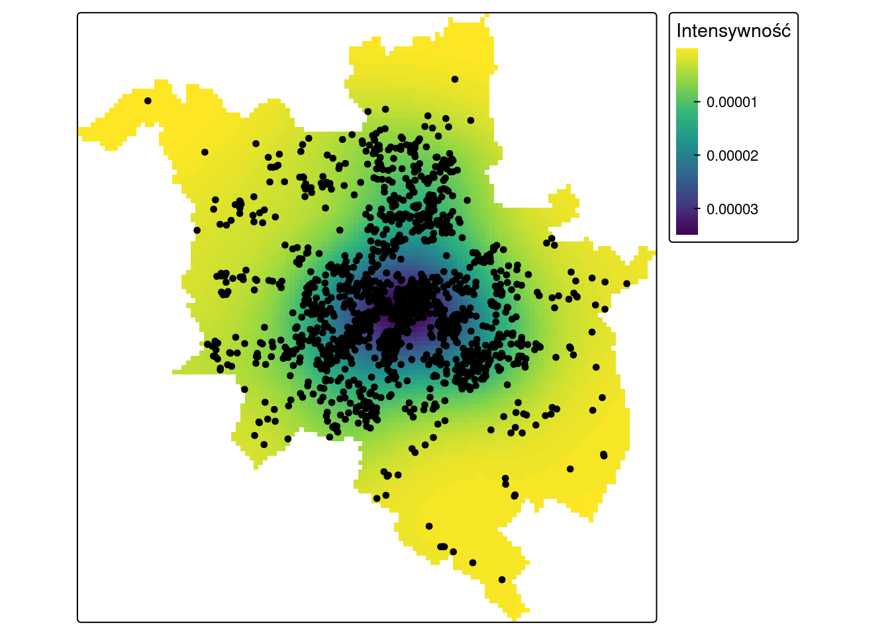
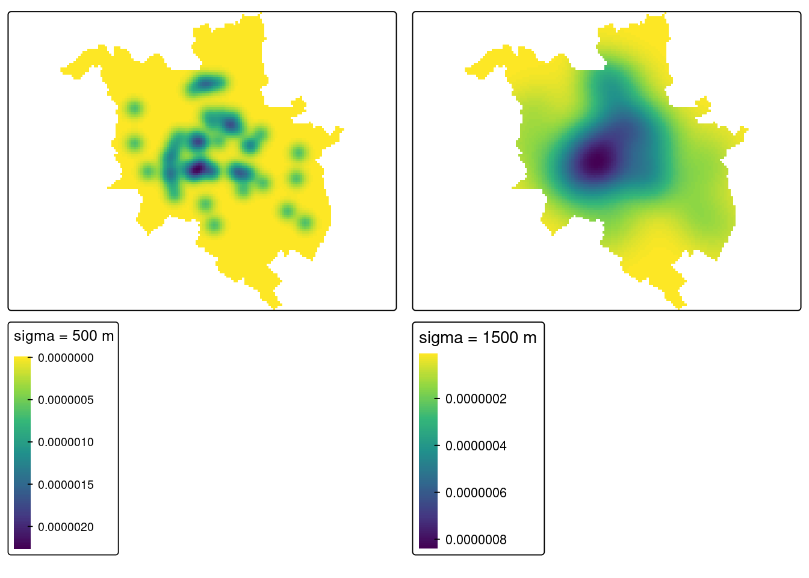

library(sf)
library(spatstat)
library(tmap)4 Metody oparte na analizie intensywności
Czego się nauczysz
Po tym rozdziale potrafisz wykonać w R:
- przekształcić dane punktowe na obiekt klasy
pppwraz z oknem analizy, - obliczyć średnią intensywność i przeskalować ją do czytelnych jednostek,
- zliczyć punkty w siatce — funkcją pakietu
spatstatoraz na obiekciesf, - wykonać test zliczania w kwadratach,
- wykonać analizę gęstości jądra dla różnych szerokości pasma,
- przedstawić wyniki na mapach w pakiecie
tmap.
Rozumiesz i umiesz zinterpretować:
- dlaczego średnia intensywność zależy od wyboru okna analizy i jak silnie,
- dlaczego liczba oczek siatki zmienia wynik testu zliczania — skala a zdolność wykrywania struktury,
- warunek stosowalności testu chi-kwadrat (\(E_i > 5\)) i co zrobić, gdy nie jest spełniony,
- dlaczego szerokość pasma (
sigma) zmienia obraz gęstości jądra i że jest wyborem analityka, - że wszystkie trzy metody opisują intensywność względem przyjętych założeń, a nie bezwzględnie.
Teoria: Najważniejsze informacje. Funkcje: Załącznik B.
4.1 Wprowadzenie
W analizie intensywności rozkład przestrzenny punktów charakteryzowany jest względem określonego obszaru badań — na przykład granicy miasta. Podstawową miarą jest gęstość \(\lambda\), czyli liczba zdarzeń na jednostkę powierzchni:
\[\hat{\lambda} = \frac{n}{a}\]
Statystyki centrograficzne (Rozdział 3) opisywały zbiór punktów przez jego środek i rozproszenie, nie odnosząc się do obszaru. Metody oparte na intensywności zmieniają punkt widzenia: pytają, ile zdarzeń wypada na jednostkę powierzchni i czy ta liczba jest w obszarze stała.
Z tego wynika właściwość, która przewija się przez cały rozdział: każdy wynik zależy od przyjętych założeń. Średnia intensywność zależy od tego, jaki obszar uznamy za obszar badań. Wynik testu zliczania zależy od tego, na ile oczek go podzielimy. Obraz gęstości jądra zależy od przyjętej szerokości pasma. Żadne z tych trzech założeń nie wynika z danych — wybiera je analityk i musi je podać razem z wynikiem.
4.2 Metody oparte na intensywności w R
Obliczenia wymagają przekształcenia danych na obiekt klasy ppp (ang. planar point pattern) wraz ze zdefiniowaniem okna analizy (ang. window).
| Funkcja | Co robi |
|---|---|
spatstat::as.owin() |
tworzy okno analizy na podstawie innego obiektu (np. granicy miasta) |
spatstat::as.ppp() |
przekształca dane punktowe na obiekt klasy ppp; wymaga podania okna |
spatstat::rescale() |
przeskalowuje obiekt ppp do innych jednostek (np. z metrów na kilometry) |
summary() na obiekcie ppp |
podaje liczbę punktów, powierzchnię okna oraz średnią intensywność |
spatstat::quadratcount() |
zlicza punkty w oczkach siatki |
spatstat::quadrat.test() |
test zliczania w kwadratach; method = "MonteCarlo" gdy wartości oczekiwane są małe |
spatstat::density() |
analiza gęstości jądra; wynik przekształcamy na raster funkcją terra::rast() |
Pełne zestawienie funkcji — Załącznik B.
Dlaczego nie
library(terra)
Pakiet terra zawiera własne funkcje rescale(), density() i area() — o takich samych nazwach jak funkcje z pakietu spatstat, ale przeznaczone dla danych rastrowych. Po wywołaniu library(terra) zasłaniają one funkcje spatstat, a rescale() na obiekcie klasy ppp przestaje działać w ogóle.
W tym rozdziale terra jest potrzebny tylko do zamiany wyniku analizy gęstości jądra na raster, dlatego wywołujemy go z przedrostkiem nazwy pakietu (terra::rast()) i nie ładujemy funkcją library().
4.3 Przykład 1: Przestępczość w Poznaniu
Dane
data/przestepstwa_2019.gpkg— lokalizacje przestępstw w Poznaniu w 2019 roku; warstwa punktowa bez atrybutów,data/out_poznan_szkoly.gpkg, warstwagranica— granica miasta Poznania. Ta sama granica jest używana w Rozdział 3 oraz w Przykładzie 2, więc wyniki można porównywać bezpośrednio.
p2019 = read_sf("data/przestepstwa_2019.gpkg")
granica = read_sf("data/out_poznan_szkoly.gpkg", layer = "granica")
nrow(p2019)[1] 1661Krok 1: przekształcenie na obiekt klasy ppp
Funkcje pakietu spatstat nie działają na obiektach sf. Potrzebne są dwa przekształcenia: granica staje się oknem analizy (klasa owin), a punkty — wzorem punktowym (klasa ppp) zdefiniowanym w tym oknie.
pzn_owin = as.owin(granica)
p2019_ppp = as.ppp(st_geometry(p2019), W = pzn_owin)
p2019_pppPlanar point pattern: 1661 points
window: polygonal boundary
enclosing rectangle: [345943.2, 368927.8] x [493660, 517878.9] unitsWypisany obiekt podaje liczbę punktów oraz zasięg okna. Pełniejszy opis daje funkcja summary(): liczbę punktów, powierzchnię okna (window area) oraz średnią intensywność (average intensity).
summary(p2019_ppp)Planar point pattern: 1661 points
Average intensity 6.347601e-06 points per square unit
Coordinates are given to 10 decimal places
Window: polygonal boundary
single connected closed polygon with 3395 vertices
enclosing rectangle: [345943.2, 368927.8] x [493660, 517878.9] units
(22980 x 24220 units)
Window area = 261674000 square units
Fraction of frame area: 0.47Krok 2: średnia intensywność
Intensywność z poprzedniego kroku jest wyrażona w punktach na metr kwadratowy, bo dane są w układzie PUWG 1992 (EPSG:2180), którego jednostką jest metr. Liczba rzędu 0,000006 jest nieczytelna, dlatego obiekt przeskalowujemy z metrów na kilometry funkcją rescale().
p2019_ppp_km = rescale(p2019_ppp, 1000)
summary(p2019_ppp_km)Planar point pattern: 1661 points
Average intensity 6.347601 points per square unit
Coordinates are given to 13 decimal places
Window: polygonal boundary
single connected closed polygon with 3395 vertices
enclosing rectangle: [345.9432, 368.9278] x [493.66, 517.8789] units
(22.98 x 24.22 units)
Window area = 261.674 square units
Fraction of frame area: 0.47Samą wartość intensywności można wydobyć bezpośrednio:
summary(p2019_ppp_km)$intensity[1] 6.347601Krok 3: wpływ wyboru okna analizy
Intensywność jest ilorazem liczby punktów i powierzchni, więc zmiana obszaru badań zmienia wynik — przy identycznym zbiorze punktów. Poniżej jako okno przyjmujemy obwiednię warstwy (bounding box) zamiast granicy miasta.
pzn_owin_bb = as.owin(st_bbox(granica))
p2019_ppp_bb = as.ppp(st_geometry(p2019), W = pzn_owin_bb)
p2019_ppp_bb_km = rescale(p2019_ppp_bb, 1000)
summary(p2019_ppp_bb_km)Planar point pattern: 1661 points
Average intensity 2.983861 points per square unit
Coordinates are given to 13 decimal places
Window: rectangle = [345.9432, 368.9278] x [493.66, 517.8789] units
(22.98 x 24.22 units)
Window area = 556.661 square unitsobwiednia = st_as_sfc(st_bbox(granica))
tm_shape(obwiednia) +
tm_borders(fill = "grey") +
tm_shape(granica) +
tm_borders(col = "blue", lwd = 2) +
tm_shape(p2019) +
tm_dots()
Szary prostokąt to obwiednia warstwy, niebieska linia — granica miasta. Wszystkie punkty leżą w granicy miasta, ale obwiednia obejmuje dodatkowo obszary, na których żadnego punktu nie ma.
Krok 4: zliczanie punktów w siatce
Intensywność może nie być stała w całym obszarze, a zmieniać się wraz z lokalizacją. Do zliczenia punktów w siatce służy funkcja quadratcount(); argumenty nx i ny określają liczbę oczek w kierunku poziomym i pionowym.
p2019_count = quadratcount(p2019_ppp, nx = 4, ny = 4)
p2019_counttile
Tile row 1, col 1 Tile row 1, col 2 Tile row 1, col 3 Tile row 2, col 1
2 14 61 8
Tile row 2, col 2 Tile row 2, col 3 Tile row 2, col 4 Tile row 3, col 1
200 636 26 11
Tile row 3, col 2 Tile row 3, col 3 Tile row 3, col 4 Tile row 4, col 2
230 408 48 0
Tile row 4, col 3 Tile row 4, col 4
15 2 plot(p2019_count, main = "Liczba przestępstw w oczkach siatki")
Siatka 4×4 ma 16 oczek, ale wynik zawiera 14 wartości. Dwa oczka leżą w całości poza granicą miasta, a funkcja quadratcount() przycina siatkę do okna analizy. Ma to znaczenie w kroku 5: liczba stopni swobody testu wynosi liczba oczek minus jeden, czyli 13, a nie 15.
Siatka jako obiekt przestrzenny
Wynik quadratcount() można przedstawić graficznie funkcją plot(), ale do bardziej rozbudowanej mapy wygodniej jest utworzyć siatkę jako obiekt pakietu sf. Tworzenie siatki składa się z trzech kroków (Rozdział 1, Załącznik C).
# poligon o zasięgu warstwy z granicą miasta
pzn_bb = st_sf(geom = st_as_sfc(st_bbox(granica)))
# siatka; argument n określa liczbę oczek w każdym kierunku
pzn_grid = st_make_grid(pzn_bb, n = 4)
# zamiana siatki na obiekt klasy sf
pzn_grid_sf = st_sf(geometry = pzn_grid)plot(pzn_grid_sf)
Liczbę punktów w każdym oczku wyznaczamy przez przecięcie siatki z warstwą punktową. Funkcja st_intersects() zwraca listę, w której każdy element odpowiada jednemu oczku i zawiera numery punktów w nim leżących; funkcja lengths() zamienia tę listę na liczbę punktów.
pzn_grid_sf$dane = lengths(st_intersects(pzn_grid, p2019))
pzn_grid_sf$dane [1] 0 0 15 2 11 230 408 48 8 200 636 26 2 14 61 0Siatka sf jest utworzona nad obwiednią, więc ma pełne 16 oczek — w tym dwa, które quadratcount() odrzucił jako leżące poza miastem. Zliczenia w pozostałych oczkach są identyczne w obu metodach, a suma w obu wynosi 1661, czyli tyle, ile punktów w zbiorze.
tm_shape(pzn_grid_sf) +
tm_polygons(fill = "dane",
fill.scale = tm_scale_intervals(n = 4, values = "brewer.yl_gn"),
fill.legend = tm_legend(title = "Liczba punktów")) +
tm_shape(p2019) +
tm_dots() +
tm_layout(legend.outside = TRUE)
Krok 5: test zliczania w kwadratach
Test zliczania w kwadratach służy do testowania hipotezy zerowej, że punkty są rozmieszczone losowo. Dzieli obszar na oczka, zlicza punkty w każdym z nich i porównuje z wartościami oczekiwanymi przy rozmieszczeniu losowym.
quadrat.test(p2019_ppp, nx = 4, ny = 4)Warning: Some expected counts are small; chi^2 approximation may be inaccurate
Chi-squared test of CSR using quadrat counts
data: p2019_ppp
X2 = 1538, df = 13, p-value < 2.2e-16
alternative hypothesis: two.sided
Quadrats: 14 tiles (irregular windows)
Ostrzeżenie
Some expected counts are small
Test chi-kwadrat wymaga, aby wartość oczekiwana w każdym oczku przekraczała 5. Gdy warunek jest złamany choćby w jednym oczku, spatstat wypisuje ostrzeżenie Some expected counts are small; chi^2 approximation may be inaccurate — i trzeba je przeczytać, bo dotyczy stosowalności testu, nie samego wykonania obliczeń.
Skąd się bierze? Siatka jest przycinana do okna analizy, więc oczka przy granicy miasta mają mniejszą powierzchnię, a wartość oczekiwana jest proporcjonalna do powierzchni oczka. Wartości oczekiwane odczytujemy ze składowej expected:
qt = quadrat.test(p2019_ppp, nx = 4, ny = 4)Warning: Some expected counts are small; chi^2 approximation may be inaccurateround(sort(qt$expected), 2) [1] 2.44 15.71 43.69 53.21 73.95 77.72 107.46 127.21 165.63 166.29
[11] 173.48 212.53 220.84 220.84sum(qt$expected < 5)[1] 1Dla przestępstw warunek łamie jedno oczko z czternastu, a wartość p jest o wiele rzędów wielkości mniejsza od progu istotności — wniosek się zatem nie zmienia. Gdy oczek o małej wartości oczekiwanej jest dużo albo wartość p leży blisko progu, zamiast przybliżenia chi-kwadrat stosuje się wariant oparty na symulacji Monte Carlo (method = "MonteCarlo"). Przykład 2 pokazuje właśnie taki przypadek.
qtest = quadrat.test(p2019_ppp, nx = 4, ny = 4)Warning: Some expected counts are small; chi^2 approximation may be inaccurateplot(qtest, main = "Test zliczania w kwadratach")
Na wykresie w każdym oczku podane są trzy liczby: zliczenie obserwowane (u góry po lewej), oczekiwane (u góry po prawej) oraz reszta Pearsona (na dole), czyli znormalizowana różnica między nimi.
Krok 6: analiza gęstości jądra
Test zliczania wyznacza lokalną intensywność, dzieląc obszar na oczka o ustalonej wielkości. Analiza gęstości jądra (ang. kernel density estimation) używa zamiast tego ruchomego okna: dla każdej komórki siatki wynikowej liczy intensywność w otoczeniu o zadanym rozmiarze, wyśrodkowanym na tej komórce. Rozmiar ruchomego okna określa argument sigma, podawany w jednostkach układu współrzędnych — tutaj w metrach.
p2019_kde500 = terra::rast(density(p2019_ppp, sigma = 500))
terra::crs(p2019_kde500) = st_crs(granica)$wkt
tm_shape(p2019_kde500) +
tm_raster(col.scale = tm_scale_continuous(values = "-viridis"),
col.legend = tm_legend(title = "Intensywność")) +
tm_shape(p2019) +
tm_dots() +
tm_layout(legend.outside = TRUE)
p2019_kde1500 = terra::rast(density(p2019_ppp, sigma = 1500))
terra::crs(p2019_kde1500) = st_crs(granica)$wkt
tm_shape(p2019_kde1500) +
tm_raster(col.scale = tm_scale_continuous(values = "-viridis"),
col.legend = tm_legend(title = "Intensywność")) +
tm_shape(p2019) +
tm_dots() +
tm_layout(legend.outside = TRUE)
Interpretacja wyniku
Średnia intensywność. W granicy miasta o powierzchni 261.7 km² odnotowano 1661 przestępstw, co daje 6.35 przestępstwa na km². Jest to liczba uśredniona dla całego miasta — mówi, ile przestępstw wypada przeciętnie na kilometr kwadratowy, ale nie mówi nic o tym, czy rozkładają się one równomiernie.
Wpływ wyboru okna analizy. To najważniejsza obserwacja tego przykładu. Przy identycznym zbiorze 1661 punktów intensywność wynosi 6.35 przestępstwa na km² w granicy miasta i 2.98 w obwiedni warstwy. Obwiednia ma 2.13 razy większą powierzchnię (556.7 km² wobec 261.7 km²), a intensywność jest dokładnie 2.13 razy mniejsza — bo licznik jest ten sam, a zmienił się wyłącznie mianownik.
Oba wyniki są poprawnie obliczone i oba są bezużyteczne bez podania okna analizy. Wartość w obwiedni opisuje intensywność przestępstw „na obszarze prostokąta obejmującego Poznań”, w którym mieszczą się tereny nienależące do miasta. Dla zjawiska związanego z zabudową miejską właściwym oknem jest granica administracyjna.
Okno analizy jest częścią wyniku
Średnia intensywność nie jest właściwością zbioru punktów — jest właściwością pary: zbioru punktów i obszaru. Podanie liczby bez podania obszaru nie jest wynikiem analizy. W raporcie zawsze zapisuje się, jaki obszar przyjęto za obszar badań i dlaczego.
Zmienność w przestrzeni. Zliczenia w siatce 4×4 wahają się od 0 do 636 punktów na oczko: dwa oczka centralne zawierają po kilkaset przestępstw, a oczka przy granicy miasta po kilka lub kilkanaście. Intensywność nie jest więc stała w obszarze — a to właśnie hipotezę o jej stałości sprawdza test z kroku 5. Wykres testu pokazuje dla każdego oczka zliczenie obserwowane obok oczekiwanego, więc widać na nim bezpośrednio, które oczka odbiegają od wartości oczekiwanej najmocniej. Wynik testu (p < 0,001) prowadzi do odrzucenia hipotezy o losowym rozmieszczeniu przestępstw.
Gęstość jądra. Obie mapy przedstawiają te same dane i obie są poprawne, ale pokazują zjawisko na różnych skalach. Przy sigma = 500 m widać pojedyncze, wyraźnie odgraniczone ogniska o wysokiej intensywności. Przy sigma = 1500 m obraz jest wygładzony: ogniska zlewają się w jeden rozległy obszar podwyższonej intensywności w centrum miasta, a szczegóły zanikają.
Mniejsza wartość sigma pokazuje strukturę drobnoskalową i jest bardziej wrażliwa na pojedyncze punkty; większa pokazuje tendencję ogólną i tę wrażliwość tłumi. Żadna z nich nie jest prawdziwsza — sigma jest wyborem analityka, zależnym od tego, na jakiej skali szukamy struktury, i podaje się ją razem z mapą.
4.4 Przykład 2: Rozkład przestrzenny szkół podstawowych w Poznaniu
W tym przykładzie kod i wyniki są podane, natomiast interpretacji nie ma w tekście. Przeczytaj wyniki samodzielnie, odpowiedz na pytania zamieszczone na końcu przykładu, a następnie rozwiń bloki z odpowiedziami i sprawdź poprawność swojej interpretacji.
Dane
Granica miasta została wczytana w Przykładzie 1 — używamy tego samego obiektu, a więc i tego samego okna analizy. Dochodzi warstwa punktowa ze szkołami podstawowymi.
szkoly = read_sf("data/out_poznan_szkoly.gpkg", layer = "szkoly")
nrow(szkoly)[1] 51szkoly_ppp = as.ppp(st_geometry(szkoly), W = pzn_owin)
szkoly_ppp_km = rescale(szkoly_ppp, 1000)Krok 1: średnia intensywność
summary(szkoly_ppp_km)Planar point pattern: 51 points
Average intensity 0.1948992 points per square unit
Coordinates are given to 13 decimal places
Window: polygonal boundary
single connected closed polygon with 3395 vertices
enclosing rectangle: [345.9432, 368.9278] x [493.66, 517.8789] units
(22.98 x 24.22 units)
Window area = 261.674 square units
Fraction of frame area: 0.47summary(szkoly_ppp_km)$intensity[1] 0.1948992Krok 2: zliczanie punktów w siatce
szkoly_count = quadratcount(szkoly_ppp, nx = 4, ny = 4)
szkoly_counttile
Tile row 1, col 1 Tile row 1, col 2 Tile row 1, col 3 Tile row 2, col 1
0 1 3 0
Tile row 2, col 2 Tile row 2, col 3 Tile row 2, col 4 Tile row 3, col 1
11 11 1 0
Tile row 3, col 2 Tile row 3, col 3 Tile row 3, col 4 Tile row 4, col 2
11 10 3 0
Tile row 4, col 3 Tile row 4, col 4
0 0 plot(szkoly_count, main = "Liczba szkół w oczkach siatki")Krok 3: test zliczania w kwadratach dla dwóch siatek
quadrat.test(szkoly_ppp, nx = 4, ny = 4)Warning: Some expected counts are small; chi^2 approximation may be inaccurate
Chi-squared test of CSR using quadrat counts
data: szkoly_ppp
X2 = 27.105, df = 13, p-value = 0.02407
alternative hypothesis: two.sided
Quadrats: 14 tiles (irregular windows)quadrat.test(szkoly_ppp, nx = 2, ny = 2)
Chi-squared test of CSR using quadrat counts
data: szkoly_ppp
X2 = 5.5251, df = 3, p-value = 0.2743
alternative hypothesis: two.sided
Quadrats: 4 tiles (irregular windows)quadratcount(szkoly_ppp, nx = 2, ny = 2) x
y [3.46e+05,3.57e+05] (3.57e+05,3.69e+05]
(5.06e+05,5.18e+05] 12 15
[4.94e+05,5.06e+05] 11 13Przy 51 punktach warunek stosowalności testu chi-kwadrat trzeba sprawdzić.
qt_sz = quadrat.test(szkoly_ppp, nx = 4, ny = 4)Warning: Some expected counts are small; chi^2 approximation may be inaccurateround(sort(qt_sz$expected), 2) [1] 0.07 0.48 1.34 1.63 2.27 2.39 3.30 3.91 5.09 5.11 5.33 6.53 6.78 6.78sum(qt_sz$expected < 5)[1] 8Wariant Monte Carlo nie korzysta z przybliżenia chi-kwadrat, lecz porównuje statystykę testową z rozkładem uzyskanym z symulacji rozmieszczenia losowego. Jest to procedura losowa, więc wymaga ustawienia ziarna generatora.
set.seed(2026)
quadrat.test(szkoly_ppp, nx = 4, ny = 4, method = "MonteCarlo", nsim = 999)
Conditional Monte Carlo test of CSR using quadrat counts
Test statistic: Pearson X2 statistic
data: szkoly_ppp
X2 = 27.105, p-value = 0.05
alternative hypothesis: two.sided
Quadrats: 14 tiles (irregular windows)Krok 4: analiza gęstości jądra
szkoly_kde500 = terra::rast(density(szkoly_ppp, sigma = 500))
terra::crs(szkoly_kde500) = st_crs(granica)$wkt
szkoly_kde1500 = terra::rast(density(szkoly_ppp, sigma = 1500))
terra::crs(szkoly_kde1500) = st_crs(granica)$wkt
mapa500 = tm_shape(szkoly_kde500) +
tm_raster(col.scale = tm_scale_continuous(values = "-viridis"),
col.legend = tm_legend(title = "sigma = 500 m"))
mapa1500 = tm_shape(szkoly_kde1500) +
tm_raster(col.scale = tm_scale_continuous(values = "-viridis"),
col.legend = tm_legend(title = "sigma = 1500 m"))
tmap_arrange(mapa500, mapa1500)
Sprawdź swoją interpretację
Pytanie 1. Średnia intensywność szkół wynosi 0.195 szkoły na km². Wyraź tę liczbę w sposób czytelny. Czy porównanie jej z intensywnością przestępstw (6.35 na km²) do czegoś prowadzi?
Sprawdź odpowiedź
Liczba 0.195 szkoły na km² jest mało czytelna — wygodniej odwrócić ułamek: jedna szkoła podstawowa na 5.13 km² powierzchni miasta.
Porównanie z intensywnością przestępstw nie prowadzi do żadnego wniosku. Obie liczby mówią, ile zdarzeń albo obiektów wypada na kilometr kwadratowy, ale dotyczą zjawisk nieporównywalnych: przestępstwo to zdarzenie, szkoła to obiekt infrastruktury. To, że przestępstw jest na km² 33 razy więcej niż szkół, nie jest informacją o żadnym z tych zjawisk.
Sensowne odniesienia dla intensywności szkół to na przykład liczba dzieci w wieku szkolnym, powierzchnia obwodu szkolnego albo intensywność szkół w innym mieście o podobnej wielkości.
Pytanie 2. Test dla siatki 4×4 odrzuca hipotezę o losowości, a dla siatki 2×2 — nie. Czy te wyniki są sprzeczne?
Sprawdź odpowiedź
Nie. Oba wyniki są poprawne i dotyczą różnych skal.
Zliczenia w siatce 2×2 to 11, 12, 13, 15 — rozkład wygląda równomiernie, bo przy czterech wielkich oczkach skupienia szkół mieszczą się w całości wewnątrz pojedynczych oczek. Siatka ich nie rozdziela, więc test nie ma czego wykryć.
Siatka 4×4 jest na tyle drobna, że skupienia trafiają do różnych oczek: zliczenia wahają się od 0 do 11, a część oczek jest pusta. Na tej skali struktura jest widoczna i test odrzuca hipotezę o losowości.
Z jednym zastrzeżeniem, które trzeba odczytać z kroku 3: przy 51 punktach w 14 oczkach warunek \(E_i > 5\) jest złamany w 8 oczkach, a najmniejsza wartość oczekiwana wynosi 0.07. Przybliżenie chi-kwadrat jest tu więc niedokładne i samo spatstat o tym ostrzega. Test Monte Carlo, który tego przybliżenia nie używa, daje wartość p równą 0,05 — czyli dokładnie na progu istotności, a nie wyraźnie poniżej niego jak 0,024 z testu chi-kwadrat.
Wniosek nie brzmi więc „szkoły są rozmieszczone losowo” ani „nie są”, lecz: na skali kilkukilometrowej rozmieszczenie szkół nie odbiega od losowego, a na skali drobniejszej odstępstwo jest na granicy istotności — i przy tej liczbie punktów mocniejszego wniosku ta metoda nie uprawnia. Pytanie o skalę rozstrzygają metody oparte na odległości (Rozdział 5), które nie dzielą obszaru na oczka.
Pytanie 3. Która liczba oczek jest zatem właściwa?
Sprawdź odpowiedź
Żadna nie jest „właściwa” w oderwaniu od pytania badawczego. Liczba oczek określa skalę, na której szukamy struktury, i jest decyzją analityka — tak jak okno analizy w kroku 3 Przykładu 1 i jak szerokość pasma w analizie gęstości jądra.
Zbyt gruba siatka nie wykryje skupień drobnoskalowych. Zbyt drobna rozdrobni obszar na oczka zawierające po kilka punktów, przy których nawet rozkład równomierny będzie wyglądał nierówno. Praktycznie: liczbę oczek dobiera się do skali zjawiska, które się bada, i podaje ją w raporcie razem z wynikiem — wartość p bez informacji o siatce nie jest wynikiem analizy.
Ten sam problem w analizie danych obszarowych nazywa się problemem zmiennych jednostek odniesienia (ang. modifiable areal unit problem, MAUP) i wraca w Rozdział 7.
Pytanie 4. Porównaj mapy gęstości jądra dla
sigma= 500 m isigma= 1500 m. Która pokazuje rzeczywisty rozkład szkół?
Sprawdź odpowiedź
Obie — na różnych skalach. Mapa dla sigma = 500 m pokazuje pojedyncze szkoły jako odrębne ogniska, bo ruchome okno o promieniu 500 m obejmuje najczęściej jedną szkołę. Mapa dla sigma = 1500 m pokazuje obszary, w których szkół jest więcej niż przeciętnie, a pojedyncze lokalizacje się w niej zacierają.
Przy 51 punktach w mieście o powierzchni 261.7 km² typowa odległość do najbliższej innej szkoły wynosi 644 m (mediana), więc pasmo 500 m jest węższe niż odstęp między punktami — mapa pokazuje wtedy raczej położenie poszczególnych szkół niż strukturę ich rozmieszczenia. Dla tego zbioru szersze pasmo jest bardziej informacyjne.
Jest to ta sama zależność od skali, co w pytaniach 2 i 3: sigma jest wyborem analityka, nie właściwością danych, i podaje się ją razem z mapą.
4.5 Pytania kontrolne
1. Czym jest intensywność i dlaczego nie jest właściwością samego zbioru punktów?
Sprawdź odpowiedź
Intensywność to liczba zdarzeń na jednostkę powierzchni, \(\hat{\lambda} = n/a\). Nie jest właściwością zbioru punktów, lecz pary: zbioru punktów i obszaru badań. Licznik zależy od danych, mianownik od decyzji analityka o tym, co uznać za obszar badań. Ta sama warstwa punktowa daje różne intensywności w różnych oknach analizy.
2. Do czego służą funkcje
as.owin()ias.ppp()?
Sprawdź odpowiedź
Funkcje pakietu spatstat nie działają na obiektach klasy sf. as.owin() przekształca warstwę poligonową na okno analizy (klasa owin), a as.ppp() przekształca warstwę punktową na wzór punktowy (klasa ppp) zdefiniowany w tym oknie. Okno jest obowiązkowym składnikiem obiektu ppp, bo bez niego nie da się obliczyć intensywności.
3. Dlaczego obiekt
pppprzeskalowujemy funkcjąrescale()?
Sprawdź odpowiedź
Intensywność jest wyrażona w jednostkach układu współrzędnych. Dla danych w PUWG 1992 (EPSG:2180) jednostką jest metr, więc intensywność wychodzi w punktach na metr kwadratowy — liczba rzędu kilku milionowych, nieczytelna i trudna do porównania. rescale(x, 1000) przeskalowuje obiekt z metrów na kilometry, dzięki czemu intensywność jest podana w punktach na km².
4. Dlaczego
quadratcount()z siatką 4×4 zwróciło 14, a nie 16 wartości?
Sprawdź odpowiedź
Siatka jest zakładana na obwiednię warstwy, a następnie przycinana do okna analizy. Dwa oczka siatki 4×4 leżą w całości poza granicą Poznania, więc nie pojawiają się w wyniku.
Ma to bezpośrednią konsekwencję dla testu zliczania: liczba stopni swobody to liczba oczek minus jeden, czyli 13, a nie 15. Siatka utworzona funkcją st_make_grid() nad obwiednią ma natomiast pełne 16 oczek — w tym dwa puste — bo nie jest przycinana do żadnego okna.
5. Czym różni się test zliczania w kwadratach od analizy gęstości jądra?
Sprawdź odpowiedź
Oba badają, czy intensywność jest stała w obszarze, ale inaczej dzielą przestrzeń. Test zliczania dzieli obszar na rozłączne oczka o ustalonej wielkości i porównuje zliczenia z oczekiwanymi — daje wynik liczbowy wraz z wartością p. Analiza gęstości jądra używa ruchomego okna i dla każdej komórki siatki wynikowej wyznacza intensywność w jej otoczeniu — daje mapę ciągłą, bez testu.
Test odpowiada na pytanie „czy intensywność jest stała”, mapa gęstości na pytanie „gdzie jest wyższa, a gdzie niższa”.
6. Co określa argument
sigmaw funkcjidensity()i jak wpływa na wynik?
Sprawdź odpowiedź
sigma określa rozmiar ruchomego okna, w jednostkach układu współrzędnych — dla danych w PUWG 1992 (EPSG:2180) w metrach. Mniejsza wartość daje obraz bardziej szczegółowy, silniej reagujący na pojedyncze punkty; większa daje obraz wygładzony, pokazujący tendencję ogólną i tłumiący szczegóły.
Nie istnieje wartość „poprawna” — sigma jest wyborem analityka, zależnym od skali badanego zjawiska, i podaje się ją razem z mapą. Pomocną wskazówką jest typowa odległość między punktami: pasmo węższe od niej pokazuje raczej położenie poszczególnych punktów niż strukturę ich rozmieszczenia.
7. Trzy wyniki w tym rozdziale zależą od decyzji analityka. Jakie to decyzje?
Sprawdź odpowiedź
- Okno analizy — decyduje o mianowniku w \(\hat{\lambda} = n/a\), a więc o średniej intensywności. Granica miasta wobec obwiedni warstwy: różnica ponad dwukrotna.
- Liczba oczek siatki — decyduje o skali, na której test zliczania szuka struktury. Siatka 4×4 i 2×2 dla szkół prowadzą do odmiennych wniosków.
- Szerokość pasma
sigma— decyduje o skali obrazu gęstości jądra.
Każdą z tych trzech decyzji trzeba podać w raporcie razem z wynikiem. Wynik bez nich nie jest interpretowalny.
4.6 Podsumowanie
| Metoda | Funkcja | Co mówi o danych | Warunek poprawnego odczytu |
|---|---|---|---|
| średnia intensywność | summary(ppp)$intensity |
ile zdarzeń wypada przeciętnie na jednostkę powierzchni | podawana razem z oknem analizy; zmienność w przestrzeni pokazują pozostałe metody |
| zliczanie w siatce | quadratcount() |
jak liczba zdarzeń zmienia się między oczkami | wynik odnosi się do zadanej liczby oczek |
| test zliczania w kwadratach | quadrat.test() |
czy intensywność jest stała w obszarze, na skali zadanej siatką | wniosek dotyczy wyłącznie tej skali; wymaga \(E_i > 5\) w każdym oczku (sprawdzamy $expected), inaczej method = "MonteCarlo"; położenie skupień pokazuje gęstość jądra |
| gęstość jądra | density(sigma = ) |
gdzie intensywność jest wyższa, a gdzie niższa | obraz odnosi się do przyjętego sigma; istotność daje quadrat.test() |
Trzy zasady, do których wracamy w kolejnych rozdziałach:
- Okno analizy jest częścią wyniku. Intensywność bez podanego obszaru badań nie jest wynikiem analizy.
- Skala jest wyborem, nie właściwością danych. Liczba oczek siatki i szerokość pasma określają, na jakiej skali szukamy struktury — i trzeba je podać razem z wynikiem.
- Wyniki na różnych skalach nie są sprzeczne. „Losowy na skali kilku kilometrów, skupiony na skali kilkuset metrów” jest spójnym opisem jednego zjawiska.
4.7 Pytanie dla kolejnego rozdziału
Metody z tego rozdziału opisują, ile zdarzeń wypada na jednostkę powierzchni i gdzie ta liczba jest wyższa. Robią to, dzieląc obszar na fragmenty — oczka siatki albo ruchome okno — i dlatego każdy ich wynik jest powiązany z wielkością tych fragmentów.
Pozostaje pytanie o odległości między punktami. Test zliczania operuje liczbą punktów w oczku, która jest taka sama, gdy leżą one stłoczone w narożniku i gdy są rozłożone równomiernie. Mapa gęstości jądra wskazuje miejsca o większym zagęszczeniu, a wzajemne odległości punktów pozostają poza zakresem obu metod.
Odpowiadają na nie metody oparte na odległości (Rozdział 5), które podchodzą do rozkładu punktów z drugiej strony: pytają wprost o odległości między punktami i ich najbliższymi sąsiadami. Dzięki temu obywają się bez podziału obszaru na fragmenty, a więc zależą od wyboru skali inaczej niż metody z tego rozdziału.
4.8 Pełny kod analizy
Poniżej zebrany jest cały kod obu przykładów, w kolejności wykonania — do skopiowania do własnego skryptu zamiast przeklejania pojedynczych fragmentów. Nie ma w nim kodu objaśniającego: to dokładnie ta ścieżka, która prowadzi od danych wejściowych do wyniku. Przykład 2 korzysta z obiektów utworzonych w Przykładzie 1, więc kod uruchamia się w całości, od początku.
library(sf)
library(spatstat)
library(tmap)
p2019 = read_sf("data/przestepstwa_2019.gpkg")
granica = read_sf("data/out_poznan_szkoly.gpkg", layer = "granica")
nrow(p2019)
pzn_owin = as.owin(granica)
p2019_ppp = as.ppp(st_geometry(p2019), W = pzn_owin)
p2019_ppp
summary(p2019_ppp)
p2019_ppp_km = rescale(p2019_ppp, 1000)
summary(p2019_ppp_km)
summary(p2019_ppp_km)$intensity
pzn_owin_bb = as.owin(st_bbox(granica))
p2019_ppp_bb = as.ppp(st_geometry(p2019), W = pzn_owin_bb)
p2019_ppp_bb_km = rescale(p2019_ppp_bb, 1000)
summary(p2019_ppp_bb_km)
obwiednia = st_as_sfc(st_bbox(granica))
tm_shape(obwiednia) +
tm_borders(fill = "grey") +
tm_shape(granica) +
tm_borders(col = "blue", lwd = 2) +
tm_shape(p2019) +
tm_dots()
p2019_count = quadratcount(p2019_ppp, nx = 4, ny = 4)
p2019_count
plot(p2019_count, main = "Liczba przestępstw w oczkach siatki")
# poligon o zasięgu warstwy z granicą miasta
pzn_bb = st_sf(geom = st_as_sfc(st_bbox(granica)))
# siatka; argument n określa liczbę oczek w każdym kierunku
pzn_grid = st_make_grid(pzn_bb, n = 4)
# zamiana siatki na obiekt klasy sf
pzn_grid_sf = st_sf(geometry = pzn_grid)
plot(pzn_grid_sf)
pzn_grid_sf$dane = lengths(st_intersects(pzn_grid, p2019))
pzn_grid_sf$dane
tm_shape(pzn_grid_sf) +
tm_polygons(fill = "dane",
fill.scale = tm_scale_intervals(n = 4, values = "brewer.yl_gn"),
fill.legend = tm_legend(title = "Liczba punktów")) +
tm_shape(p2019) +
tm_dots() +
tm_layout(legend.outside = TRUE)
quadrat.test(p2019_ppp, nx = 4, ny = 4)
qtest = quadrat.test(p2019_ppp, nx = 4, ny = 4)
plot(qtest, main = "Test zliczania w kwadratach")
p2019_kde500 = terra::rast(density(p2019_ppp, sigma = 500))
terra::crs(p2019_kde500) = st_crs(granica)$wkt
tm_shape(p2019_kde500) +
tm_raster(col.scale = tm_scale_continuous(values = "-viridis"),
col.legend = tm_legend(title = "Intensywność")) +
tm_shape(p2019) +
tm_dots() +
tm_layout(legend.outside = TRUE)
p2019_kde1500 = terra::rast(density(p2019_ppp, sigma = 1500))
terra::crs(p2019_kde1500) = st_crs(granica)$wkt
tm_shape(p2019_kde1500) +
tm_raster(col.scale = tm_scale_continuous(values = "-viridis"),
col.legend = tm_legend(title = "Intensywność")) +
tm_shape(p2019) +
tm_dots() +
tm_layout(legend.outside = TRUE)
szkoly = read_sf("data/out_poznan_szkoly.gpkg", layer = "szkoly")
nrow(szkoly)
szkoly_ppp = as.ppp(st_geometry(szkoly), W = pzn_owin)
szkoly_ppp_km = rescale(szkoly_ppp, 1000)
summary(szkoly_ppp_km)
summary(szkoly_ppp_km)$intensity
szkoly_count = quadratcount(szkoly_ppp, nx = 4, ny = 4)
szkoly_count
plot(szkoly_count, main = "Liczba szkół w oczkach siatki")
quadrat.test(szkoly_ppp, nx = 4, ny = 4)
quadrat.test(szkoly_ppp, nx = 2, ny = 2)
quadratcount(szkoly_ppp, nx = 2, ny = 2)
qt_sz = quadrat.test(szkoly_ppp, nx = 4, ny = 4)
round(sort(qt_sz$expected), 2)
sum(qt_sz$expected < 5)
set.seed(2026)
quadrat.test(szkoly_ppp, nx = 4, ny = 4, method = "MonteCarlo", nsim = 999)
szkoly_kde500 = terra::rast(density(szkoly_ppp, sigma = 500))
terra::crs(szkoly_kde500) = st_crs(granica)$wkt
szkoly_kde1500 = terra::rast(density(szkoly_ppp, sigma = 1500))
terra::crs(szkoly_kde1500) = st_crs(granica)$wkt
mapa500 = tm_shape(szkoly_kde500) +
tm_raster(col.scale = tm_scale_continuous(values = "-viridis"),
col.legend = tm_legend(title = "sigma = 500 m"))
mapa1500 = tm_shape(szkoly_kde1500) +
tm_raster(col.scale = tm_scale_continuous(values = "-viridis"),
col.legend = tm_legend(title = "sigma = 1500 m"))
tmap_arrange(mapa500, mapa1500)